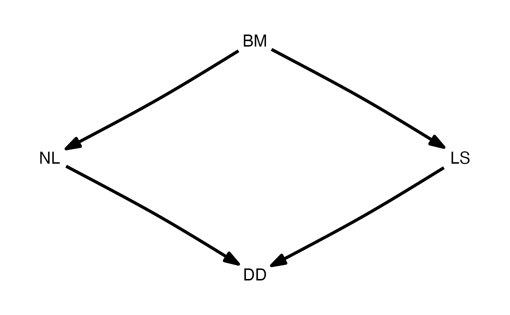
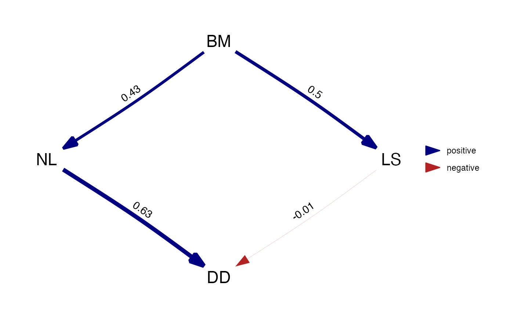
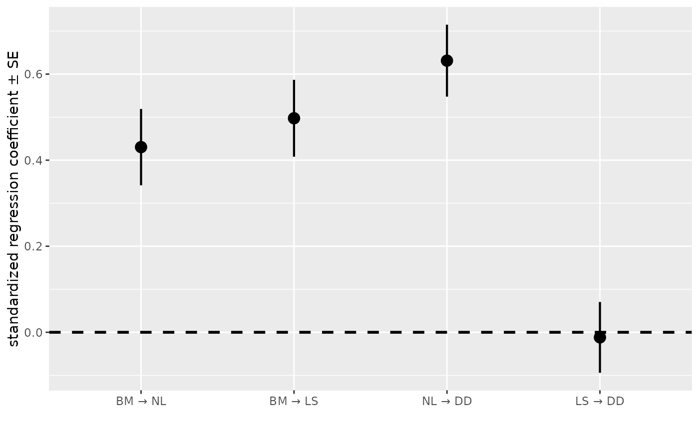
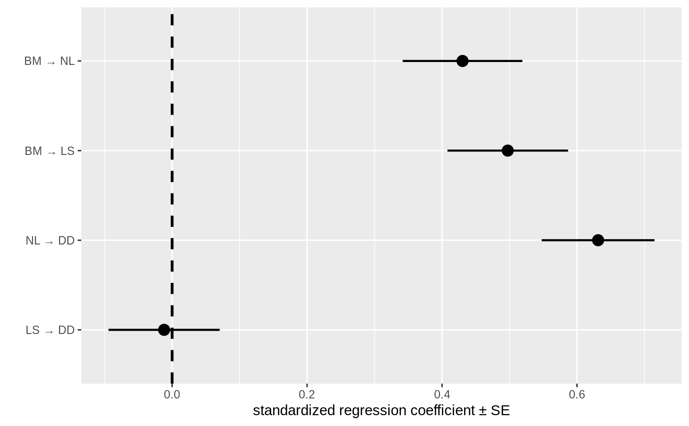

Plot path coefficients and their confidence intervals or standard errors.
Source:R/print_and_plot.R
coef_plot.RdPlot path coefficients and their confidence intervals or standard errors.
Usage
coef_plot(
fitted_DAG,
error_bar = "ci",
order_by = "default",
from = NULL,
to = NULL,
reverse_order = FALSE
)Arguments
- fitted_DAG
A fitted DAG, usually obtained by
best(),average()orest_DAG().- error_bar
Whether to use confidence intervals (
"ci") or standard errors ("se") as error bars. Will force standard errors with a message if confidence intervals are not available.- order_by
By
"default", the paths are ordered as in the the model that is supplied. Usually this is in the order that was established by[phylo_path()]for all combined graphs. This can be change to"causal"to do a reordering based on the model at hand, or to"strength"to order them by the standardized regression coefficient.- from
Only show path coefficients from these nodes. Supply as a character vector.
- to
Only show path coefficients to these nodes. Supply as a character vector.
- reverse_order
If
TRUE, the paths are plotted in reverse order. Particularly useful in combination withggplot2::coord_flip()to create horizontal versions of the plot.
Examples
d <- DAG(LS ~ BM, NL ~ BM, DD ~ NL + LS)
plot(d)

d_fitted <- est_DAG(d, rhino, rhino_tree, 'lambda')
plot(d_fitted)

coef_plot(d_fitted, error_bar = "se")

# to create a horizontal version, use this:
coef_plot(d_fitted, error_bar = "se", reverse_order = TRUE) + ggplot2::coord_flip()
